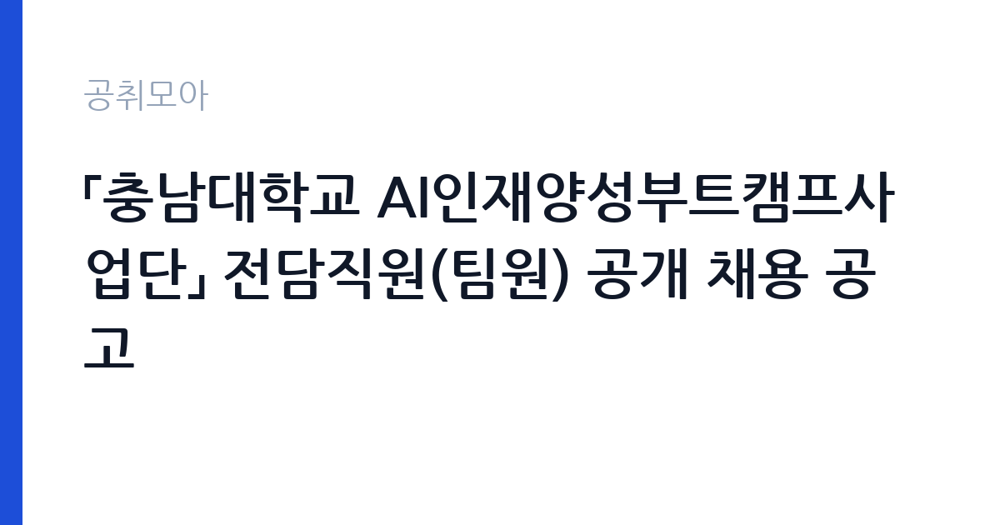

[국가기관] 「충남대학교 AI인재양성부트캠프사업단」 전담직원(팀원) 공개 채용 공고
충남대학교 · 대전 · 마감 2026-10-25 (D-7) · 출처 나라일터

한눈에 보는 모집 조건
| 기관 | 충남대학교 |
|---|---|
| 공고명 | 「충남대학교 AI인재양성부트캠프사업단」 전담직원(팀원) 공개 채용 공고 |
| 고용형태 | 정규직 |
| 근무지 | 대전 |
| 게시일 | 2026-10-19 |
| 마감일 | 2026-10-25 (D-7) |
지원자격, 이렇게 읽으세요
- 팀원 1명
- 접수 ~2026-10-25 마감
- 세부 조건은 원문 공고문 확인
지원 자격은 학사학위 이상 소지자이며, 사업 기간 종료일 기준 만 65세 미만이어야 합니다. 국가공무원법 제33조 결격사유가 없고, 아동·청소년 성보호법 제56조에 해당하지 않아야 하며, 남성은 병역을 마쳤거나 면제되어야 합니다. 임용 즉시 근무가 가능해야 하고, 기타 법령으로 응시자격이 정지되지 않아야 합니다. 우대사항은 총괄 운영 업무 수행 경력자와 대학 교직원·정부재정지원사업 근무 경험자입니다. 정부사업 특유의 회계와 성과관리 경험이 있다면 서류에서 그 부분을 전면에 내세우는 것이 유리합니다.
이 공고의 포인트
이 자리의 실질적 매력은 급여 수준과 사업 규모입니다. 충남대가 2026년 3월에 낸 같은 사업단 공고문에는 팀원 보수가 월 300만원 내외로 적혀 있었고, 4대보험 기관부담금과 퇴직금, 성과금은 별도였습니다. 이번 차수의 보수는 원문 공고문에서 다시 확인해야 하지만, 대학 부설 사업단 실무직 중에서는 상단에 속하는 편입니다. 두 번째 매력은 사업 기간입니다. 사업 종료 예정일이 2031년 2월 28일로 길게 잡혀 있어, 1년 단위 재계약을 거듭하면 최대 5년 가까이 같은 사업에 머물 수 있습니다.
전형은 어떻게 진행되나
전형은 서류전형과 면접심사로 진행되는 것이 일반적입니다. 서류에서는 응시자격 충족과 경력기술서의 구체성을 보고, 면접에서는 사업 운영 실무 이해도와 조직 적응력을 확인합니다. 접수는 이메일(aiboot@cnu.ac.kr)로만 받으며, 서명과 날인을 마친 서류를 하나의 PDF 파일로 묶어 제출하는 형식이 요구됩니다. 파일명과 제출서류 목록은 공고문의 안내를 그대로 따라야 하며, 서명이나 날인이 빠지면 접수 자체가 반려될 수 있습니다. 문의는 사업단 042-605-3750으로 하면 됩니다.
원문에서 확인한 전형 방식
○ 선발직급 : 팀원 1명 ○ 고용형태 : 기간제 ○ 접수기간 : 2026. 10. 19.(월) ~ 10. 25.(일) 23:59 ○ 응시방법 : 이메일 접수(aiboot@cnu.ac.kr) ○ 문의처 : 충남대학교 AI인재양성부트캠프사업단 ☎ 042-605-3750
이런 분께 추천해요
- 대학 재정지원사업이나 정부 부트캠프 운영 경험이 있는 행정 실무자
- 예산 집행과 정산, 성과보고서 작성을 직접 해본 지원자
- AI 교육 프로그램 운영을 기획하고 싶은 교육·행정 전공자
지원 전 체크리스트
- 제출서류를 하나의 PDF로 묶고 서명·날인을 확인했는가
- 경력기술서에 사업명·기간·담당 업무를 수치와 함께 적었는가
- 마감 시각이 10월 25일 23시 59분이라는 점을 인지했는가
- 만 65세 미만·학사 이상 등 공통 자격을 충족하는가
모집 일정과 제출 타이밍
접수는 2026년 10월 19일부터 25일 밤 11시 59분까지입니다. 마감이 일요일 밤이라 토요일까지 제출을 끝내는 계획이 안전합니다. 서류전형 합격자 발표와 면접 일정은 공고문 또는 개별 통보로 안내되며, 최종 합격 후 임용일은 사업단 사정에 따라 조정될 수 있습니다. 계약 기간은 계약일로부터 1년 단위이고, 사업 종료 시 재임용을 보장하지 않는다는 조건이 명시되어 있습니다.
직무 이해하기: 국가기관
부트캠프 사업단의 팀원은 사업이 굴러가는 행정 축을 담당합니다. 교육과정 운영을 위해 강사 섭외와 강의실 배정, 수강생 모집과 관리, 출석과 수료 처리를 조율합니다. 예산 편성과 집행, 정산 자료 작성도 핵심 업무입니다. 교육부에 제출하는 실적 보고서와 성과지표 관리도 이 자리에서 나옵니다. AI 교육 내용을 직접 가르치는 직무가 아니라, 교육이 정해진 규정과 일정 안에서 차질 없이 돌아가게 만드는 직무라는 점을 분명히 알고 지원해야 합니다.
자기소개서 작성 팁
자기소개서는 사업 운영 경험을 숫자로 제시하는 방식이 효과적입니다. 몇 명 규모의 사업을, 얼마의 예산으로, 어떤 정산 문제를 해결하며 운영했는지를 구체적으로 쓰세요. 충남대 AI 부트캠프는 교육부 첨단산업 인재양성 사업의 일환이므로, 정부지원사업의 평가 체계를 이해하고 있다는 점을 드러내면 좋습니다. 지원동기에서는 AI 인재 양성이라는 목표에 왜 행정으로 기여하고 싶은지 한 문단으로 정리하세요. 성과를 과장하지 말고 본인이 실제로 맡았던 부분을 경계로 나눠 쓰는 편이 신뢰를 줍니다.
면접 준비 포인트
면접에서는 부트캠프 사업의 구조를 이해하고 있는지 확인할 가능성이 높습니다. 교육부 첨단산업 인재양성 부트캠프가 어떤 사업이고, 대학이 무엇을 평가받는지 설명할 수 있으면 강합니다. 예산 집행 과정에서 규정과 현장 요구가 충돌할 때 어떻게 처리할지 묻는 질문도 준비하세요. 수강생 민원이나 일정 지연 같은 돌발 상황에서의 대응 경험을 한 가지 사례로 정리해 두면 답변이 흔들리지 않습니다. 마지막으로 1년 단위 계약이라는 조건을 이해하고 있는지 확인하는 질문이 나올 수 있습니다.
급여·근무조건 읽는 법
보수는 사업단 예산과 경력에 따라 정해지며, 2026년 3월 공고 기준으로 팀원 월 300만원 내외에 4대보험 기관부담금·퇴직금·성과금이 별도로 지급되었습니다. 이번 차수의 금액은 원문 공고문에서 확인해야 하며, 학력과 경력에 따라 별도 협의가 가능하다고 안내되어 있습니다. 근무는 주 5일, 1일 8시간(09:00~18:00, 휴게 1시간 포함)이고 근무지는 대전 유성구 충남대학교입니다. 인사와 복무는 충남대학교 취업규칙을 따르며, 계약 만료 시 고용관계는 소멸하고 사업 종료 시 재임용이 보장되지 않습니다.
자주 묻는 질문
- 정규직으로 전환되나요
아니요. 이 자리는 기간제 계약직이며 정규직 전환을 전제로 하지 않습니다. 계약은 1년 단위로 재계약이 가능하고, 사업 종료 예정일은 2031년 2월 28일입니다. - AI 전공이어야 하나요
공고상 요건은 학사학위 이상이며 특정 전공을 한정하지 않습니다. 다만 사업 기획·예산·교육 운영 경력과 정부재정지원사업 경험이 우대됩니다. - 접수는 어떻게 하나요
이메일(aiboot@cnu.ac.kr)로만 받습니다. 서명과 날인을 마친 제출서류를 하나의 PDF로 묶어 보내고, 서명이 없으면 접수되지 않는다는 점에 유의하세요.
함께 보면 좋은 공고
[국가기관] 충남대학교 브랜드 단과대학 사업 연구교수 공개채용 공고 — 마감 2026-10-26[국가기관] 충남대학교 브랜드 단과대학 사업 기간제계약직(행정원) 공개채용 공고 — 마감 2026-10-26[국가기관] 충남대학교 AI거점대학 사업 산학협력중점교수 공개채용 공고 — 마감 2026-10-26출처: 나라일터 공개정보를 바탕으로 공취모아가 정리한 안내글입니다. 모집 조건·일정은 변경될 수 있으니 지원 전 반드시 원문 공고문을 확인하세요. 본 글은 정보 제공용이며 합격을 보장하지 않습니다.